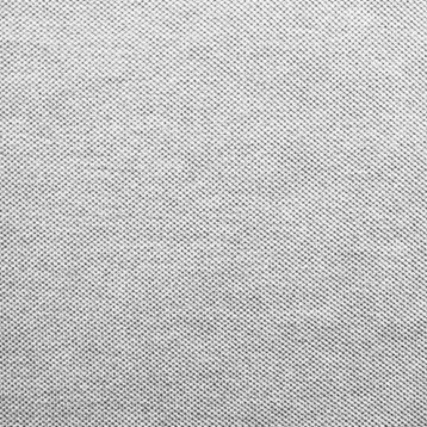
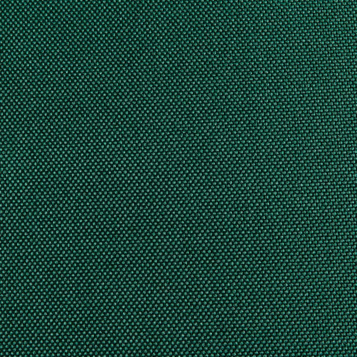
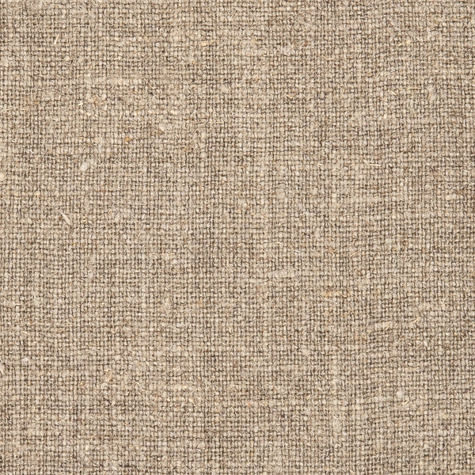
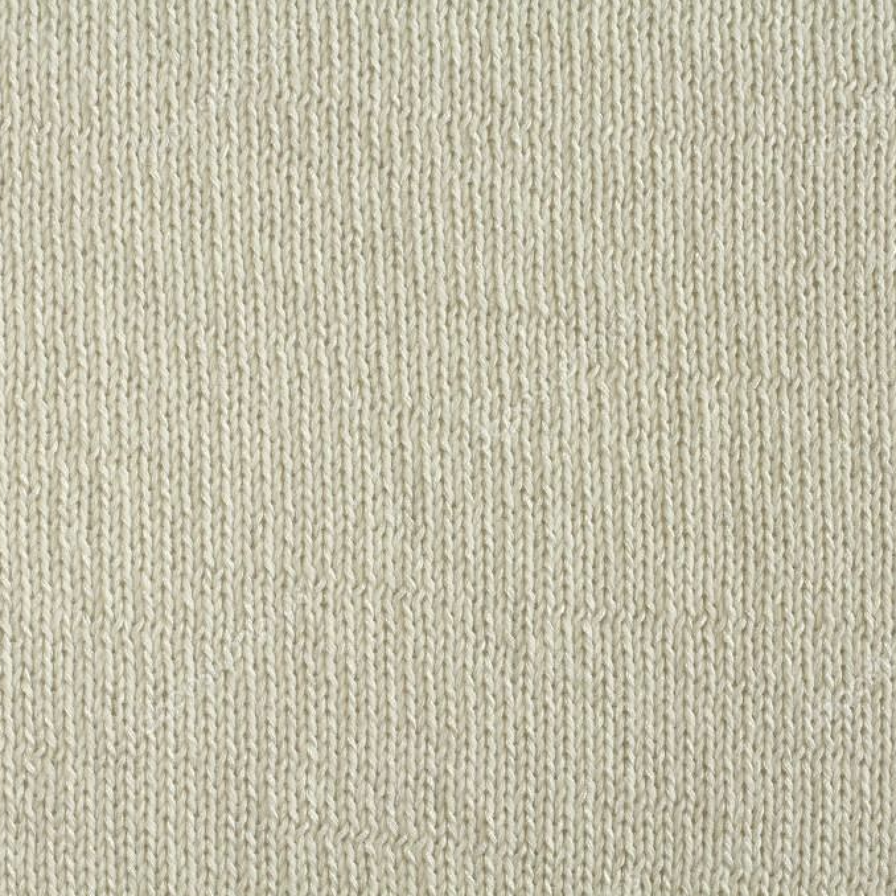
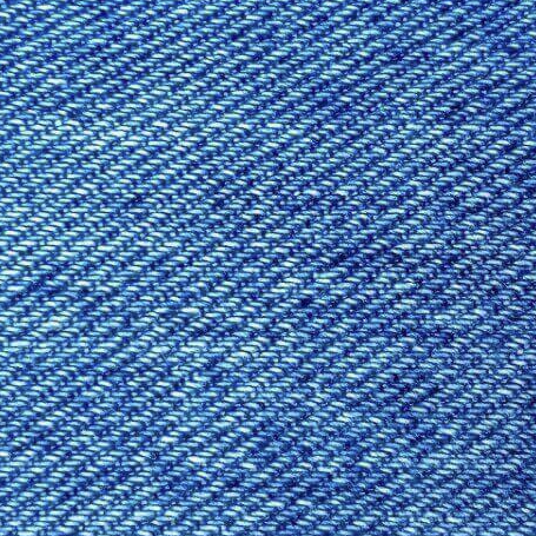
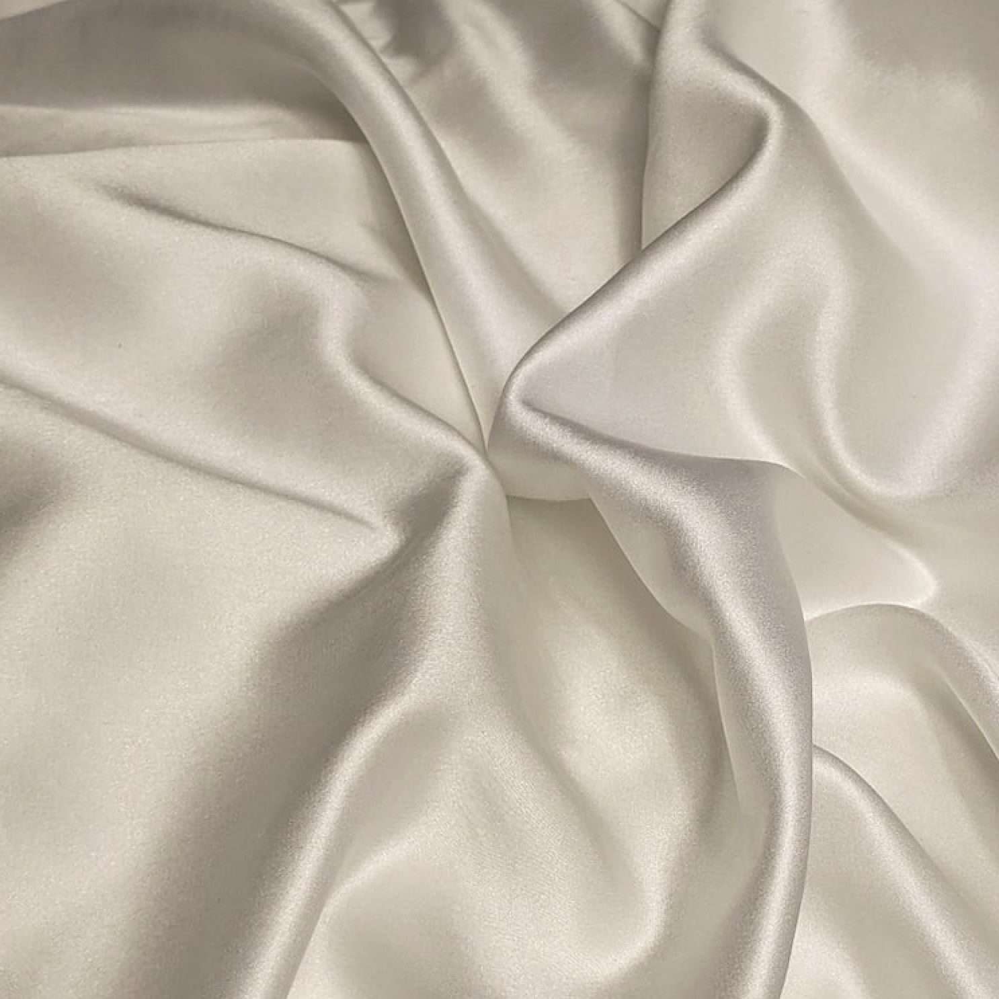
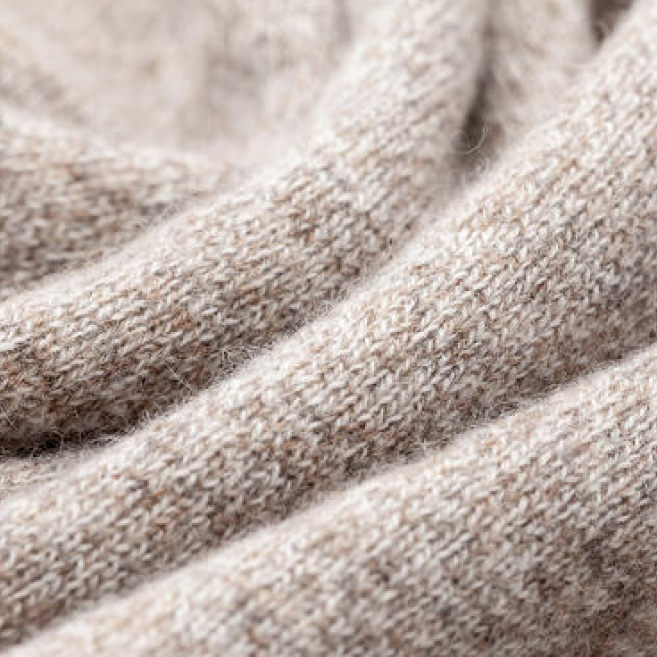
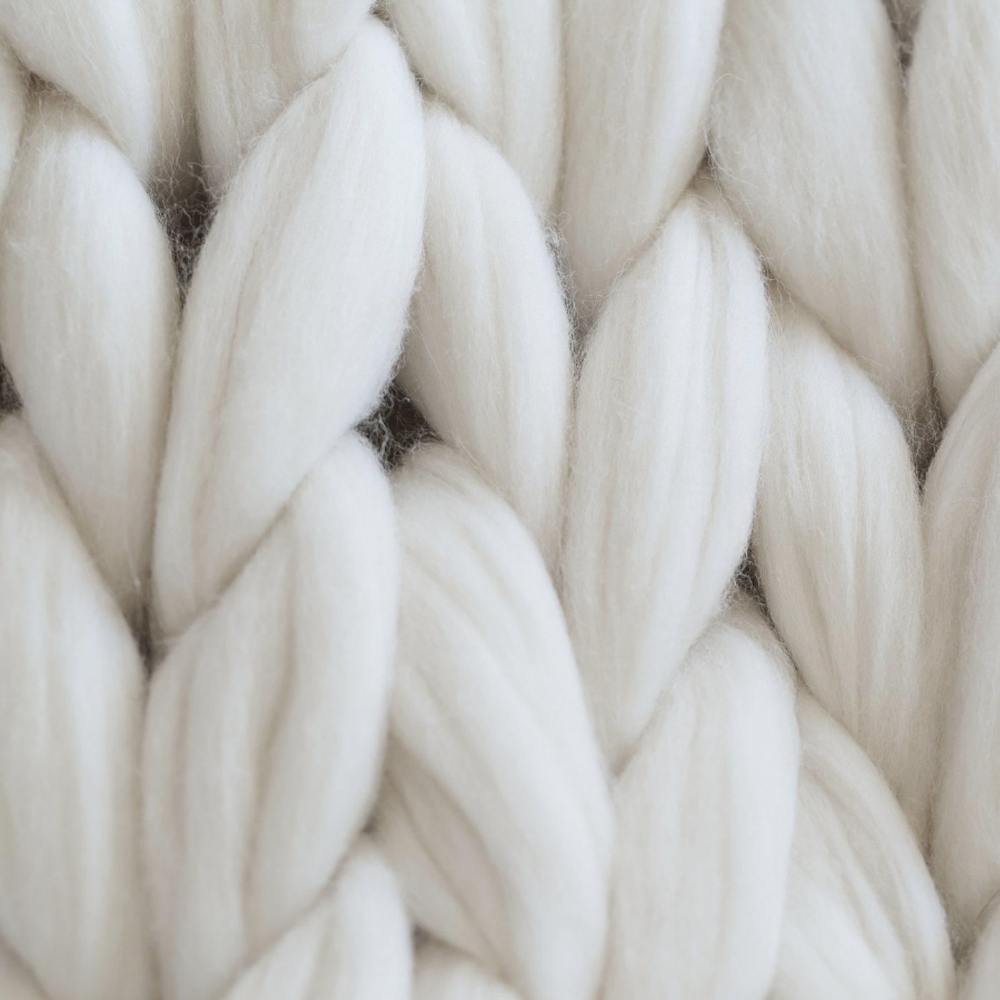

- Fashion Eco
- Fabrics Overview
- Sustainability
- Resources
- Make a Difference

Polyester
Polyester is a synthetic fabric and is one of the most popular textiles. Polyester is not a sustainable fabric. While Polyester has been considered more sustainable from a consumer care perspective (long lasting, requires less water, energy, and heat for washing), the production process and disposal of polyester generate a significant negative environmental impact. Because it is derived from non-renewable resources such as oil, the disposal of the fabric contributes to CO2 emissions and generates copious amounts of plastic waste and microfibers.
Nylon
Nylon is made of petrochemicals, which are synthetics that make the fabric non-biodegradable. Nylon also contributes to part of the microplastic pollution in the ocean, which means that the fabric has a large negative impact on the underwater environment. While nylon itself is not a sustainable fabric and should be avoided, recycled nylon is an alternative you could use to minimize negative environmental impact. The more sustainable and natural, the better.


Linen
Linen is one of the most sustainable fabrics in history. Made from the fibers of flax paint, linen is a very versatile fabric. Used to make anything from tablecloths and bed sheets to clothing, linen is fully biodegradable making it a perfectly environmentally friendly fabric to shop. The fabric’s strength and natural moth resistance are additional pros to consider when checking out your clothing options.
Cotton
Cotton is a completely natural product, making it a biodegradable fabric. However, the production method of cotton is not environmentally sustainable. This is because cotton production has high water consumption and pollution, soil degradation, greenhouse gas emissions, and use of harmful pesticides and fertilizers. Organic cotton, however, is grown using more sustainable methods that have a lower environmental impact. When shopping for clothes, make sure to check whether the fabric you’re looking at is made using organic cotton for the more sustainable option.


Denim
Made from cotton, denim is an environmentally damaging fabric. Often made with toxic dyes, the denim material can contaminate soil or compost during biodegradation, making the fabric not fully biodegradable. About 1,800 gallons of water are needed for growing cotton to create a pair of jeans, which makes up 92% of the water footprint of a pair of jeans. While a majority of denim is not sustainable, however, there are emerging initiatives and brands for the production of sustainable denim.
Leather
While durable, stylish, and long-lasting, leather’s disadvantages to the environment are extensive. Because real leather comes from animals, the process of producing leather can be harmful to animals and may be processed using chemicals. Additionally, some chemicals used to tan leather are not biodegradable, therefore causing more harm to the water and environment. When leather is sourced without chemicals, such as regenerative leather or recycled leather, then the fabric can serve as a more sustainable option. Vegan leather is also an alternative to the fabric.


Satin
Satin’s sustainability depends on the fabrics used to create it. Satin can be made of either silk thread or can be woven from nylon and polyester. As a result, the biodegradability and environmental impact of the fabric varies.
Silk
As a natural, biodegradable, and long-lasting fabric, silk seems like it would be a sustainable fabric. However, silk’s production process actually makes it less environmentally friendly. Production of silk takes up a high amount of energy, uses a lot of water, and uses chemicals to clean and dye the silk, which pollutes water and decreases biodegradability, making the fabric more toxic. More sustainable forms of silk include ‘peace silk’, which uses a more humane cultivation of silkworms, and silk that is verified by the World Fair Train Organization Guarantee System.


Cashmere
[Enter Description]
Recycled Wool
[Enter Description].
